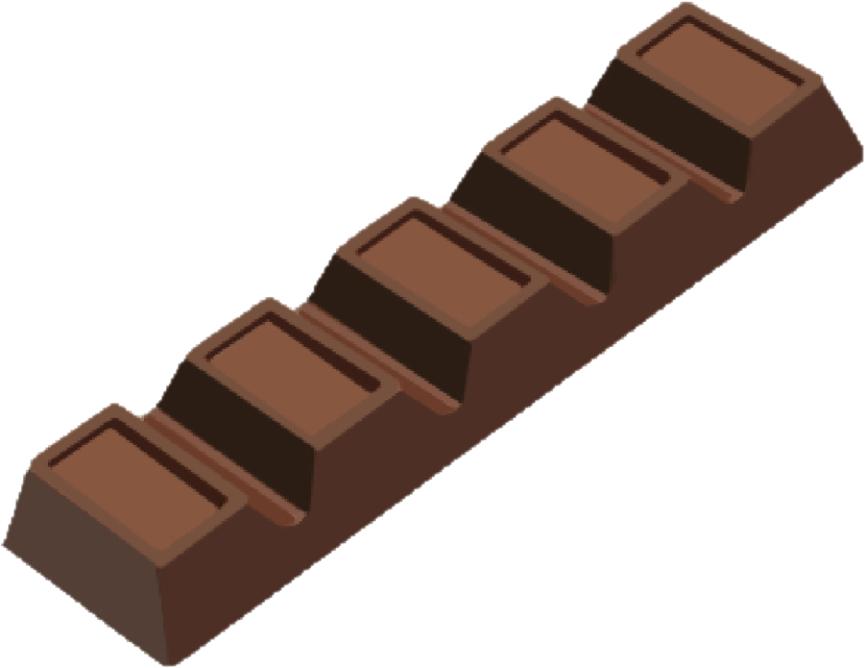

Види шоколаду
Шоколад буває різних видів, кожен із яких має свій унікальний смак, текстуру та спосіб приготування. Вони відрізняються не лише за вмістом какао, але й за методом обробки та додаванням інших інгредієнтів, таких як цукор, молоко чи ваніль.
Темний шоколад
Темний шоколад вважається найкориснішим видом шоколаду через високий вміст какао і меншу кількість цукру. Він має інтенсивний, гіркуватий смак і підходить для тих, хто любить насичені шоколадні ноти.
- Вміст какао: 50-90%.
- Інгредієнти: Какао-маса, какао-масло, мінімальна кількість цукру.
- Користь: Містить антиоксиданти, що покращують роботу серця та судин, а також магній, що допомагає знизити стрес.
Молочний шоколад
Цей вид є одним із найпопулярніших завдяки своєму солодкому і кремовому смаку. Молочний шоколад містить менше какао, але більше цукру та молочних інгредієнтів, що робить його м'якшим і ніжнішим.
- Вміст какао: 20-50%.
- Інгредієнти: Какао-маса, какао-масло, цукор, сухе молоко.
- Користь: Хоча молочний шоколад містить більше цукру, він також багатий кальцієм завдяки молочним інгредієнтам.
Білий шоколад
Білий шоколад не містить какао-порошку, що робить його світлим і кремовим. Його основою є какао-масло, що надає шоколаду насичений вершковий смак.

- Вміст какао: Відсутній (містить лише какао-масло).
- Інгредієнти: Какао-масло, цукор, сухе молоко, ваніль.
- Користь: Білий шоколад не містить антиоксидантів, як темний шоколад, але є хорошим джерелом енергії завдяки високому вмісту жиру та цукру.
Рубі шоколад
Рубі шоколад — відносно новий вид шоколаду, створений із спеціально оброблених какао-бобів, які мають природний рожевий колір. Він має фруктовий смак і більш м'який солодкий профіль.

- Вміст какао: 40-50%.
- Інгредієнти: Какао-боби рубі, какао-масло, цукор.
- Користь: Рубі шоколад зберігає частину корисних властивостей темного шоколаду і має унікальний смаковий профіль.
Шоколад для приготування (кувертюр)
Цей вид шоколаду використовується професійними кондитерами та шеф-кухарями для приготування десертів. Він містить більшу кількість какао-масла, що робить його ідеальним для темперування і створення гладкої текстури в глазурі або прикрасах.
- Вміст какао: Високий (до 70-80%).
- Інгредієнти: Високоякісна какао-маса, какао-масло, мінімум цукру.
- Користь: Використовується для створення професійних десертів із насиченим смаком.
Шоколад із начинками
Такі шоколади містять різні додатки, як-от горіхи, фрукти, карамель або нуги. Начинки додають шоколаду унікальний смаковий профіль і текстуру, що задовольняє різні смакові вподобання.
- Вміст какао: Варіюється залежно від виду основного шоколаду (темний, молочний, білий).
- Інгредієнти: Шоколад (темний, молочний або білий) плюс додаткові компоненти (горіхи, фрукти, карамель).